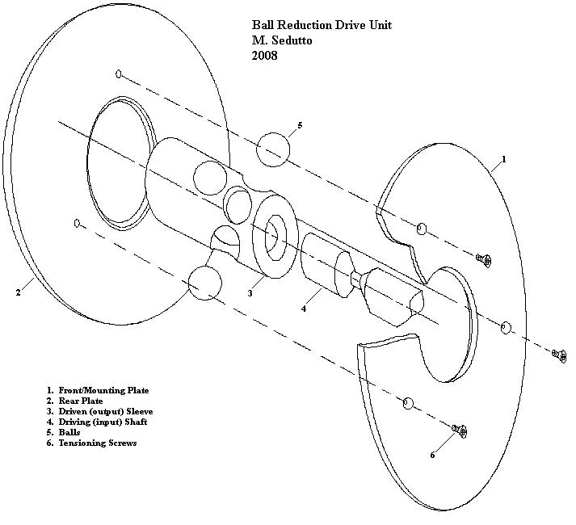
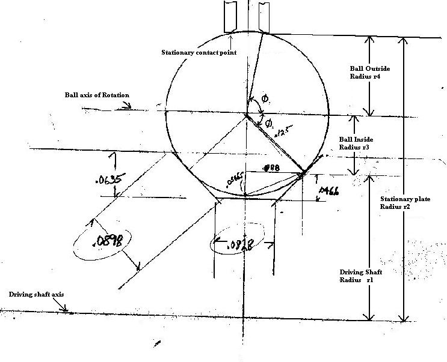

In response to some emails I received I thought it was worth taking the time to write up
this information for general distribution. Hopefully this will be clear enough to enable
"you guys" to come up with your own nifty ball drives. If any further info is needed just
drop me an email and I'll try to help you out.
Referring to the images below, I'll describe the functional aspects of the ball drives I made
and what I discovered about their behavior and design. The drives I made utilized 0.25"
diameter balls, 0.25" input or driving shafts, and 0.625" outside stationary plates. This
resulted in a little more than a 4:1 reduction ratio, which is about right for an antenna
tuner capacitor, but certainly too course for a VFO.
Reduction Ratio Determination
The reduction ratio is not unlike any other set of gears, pulleys or wheels in that their
ratios are a direct relationship to the diameter of their various contact surface radii.
For the ball drive there are two sets of ratios to be considered. First, and foremost, is
the ratio of the rotating (input) shaft's contact radius on the ball, and the stationary
contact radius of the mounting plate on ball. Secondly, since the ball acts at it's center
on the rotation of the output sleeve, the ball's movement also varies according to the ratio
between the two contact circle diameters on its surface, which are concentric with it's axis of rotation.
In the example below the driving shaft contact radius is about 0.1081 calculated. However,
after a little polishing of the shaft contact patch through use it settles out closer to
0.100"' a nice round number. The stationary contact radius was a little less precisely
arrived at. I machined a hole in two 1/16" brass plates to 0.625", then machined a small
45 degree chamfer on one edge of each plate for the ball to ride against. The contact patch
then is about 0.640" diameter. Hence the primary ratio is about 6:1
For the ball contact circles, looking at the drawing below, it's readily apparent that the
input shaft contacts the ball much closer to the ball's axis of rotation than does the
contact circle of the stationary plates. The ratio of diameter of these two contact
circles establishes the second ratio affecting the overall drive reduction.
I've included the contact angles in the drawing as it helps calculate the radii.
In this case the contact radii = Sin of the included angle time the ball's radius.
I thought a nifty formula could be developed here, but after doing all the math and
reducing the equations it turns out to be very simple as follows.
So for the example below the ratio is:
(r2/r1)(r3/r4) = (0.64/0.1)((Sin 45/Sin85)) or (0.1/0.64)(0.088/0.124) = 4.52
Note: Only the ratio matters, which is why the Sin of the angles is not multiplied by the
actual radius of the ball, as this would not change the ratio.
Moving right along
Drive torque and slippage issues
Two problems with ball drive arise regarding torque and slippage. First, there are no teeth
or tread to facilitate the transfer of torque between component surfaces. In fact, any
surface irregularities are extremely noticeable in rough, unreliable performance. The
surfaces must be as smooth, and hard, as possible to resist wear and provide smooth
operation. This is mostly true where the radii are smallest, as in the driving shaft and
the balls themselves. This hardness lessens the friction between parts contributing to
slippage, and required lubrication makes things that much worse.
The only solution to these factors is to have considerable force applied at the contact
surfaces. One way to facilitate that is to employ contact angles, as shown below, to increase
radial contact pressures.
Some minimum angles are required simply to keep the ball captured and the shafts in alignment.
For the input drive shaft, where the greatest friction is needed, it turns out that 45 degrees
is a good balance. Increasing the angle reduces r3, which reduces the drive ratio,
increasing the need for more torque. Less angle reduces the friction contributing to
slippage.
The outside angle, determining r4, is far less critical for slippage reduction at the outside
radius of the balls, inasmuch as it serves mainly to keep the ball captured and apply the
overall inward force that makes it all work. In this case, the very acute angle of 15
degrees between the balls contact point and its outermost tangential surface enable the
plates to exhibit considerable inward force on the ball as the plates are pulled together.
Alignments, tolerances, and methods of construction
Alignments:
Here's where it gets serious. You may have your own preferred machine shop methods of
accomplishing the ends, but I'll offer some tips here on avoiding pitfalls.
1. The balls must be located equidistant about the driven sleeve. Any error here shifts the
centers out of concentricity resulting in binding, slippage, etc.
2. The balls must be a nearly perfect clearance fit in the sleeve. If the holes are too
large it will result in backlash and won't stay where you leave it. It also contributes
to concentricity issues mentioned in item 1.
3. The balls MUST be located in the same plane and that plane must be perpendicular to the
axes of rotation of all parts. Now if you have a combination mill/lathe these is easy,
or a rotary table on your drill press, but I did my first ball drive using only a V-block
with a back stop.
This is a very important point. This aligns all axes of rotation in parallel. If your input
shaft fits snugly in the bore of the output sleeve you can fudge this a little and things
will still work, but if this is right, the bore can be the size of the Grand Canyon and
everything will still line up true and concentric (no shaft wobble or binding, sweet!).
That pretty much covers alignments.
Tolerances:
As for tolerances there aren't any really save for two. Everything should find it's own
place except for the balls in the sleeve and the input shaft/ball clearance.
The ball/sleeve hole clearance should be the closest slip fit you can ream. See 2. If you
don't have adjustable reamers, or some other way to hold a close diameter with smooth
surfaces this will be a difficult piece to make well, but can be done.
The clearance at the bottom of the V groove in the input shaft is important. As the grooves
wears the ball will drop down, if over the years it touches the bottom, the whole assembly
will lose it's mind and change ratio and finally just slip away. Guess there's a metaphor
in there somewhere.
So cut this deep enough (0.010"~ 0.020") to clear the ball without leaving the shaft too
narrowed. Keep your balls from bottoming out. (Sorry, couldn't help it).
Ball size versus shaft diameter selection is important here. Depending on the ratios
desired for your project (or what size pieces you have in your scrap pile) this might be an
issue. I generally like a 1:1 shaft/ball diameter ratio, but smaller balls work too, for
smaller reduction ratios; larger balls, not so much.
Construction methods:
SO! How do we build these things!?
Well, in viewing the sketches provided you could see I went to great lengths in developing
a fully blueprinted and detailed dimensional plan. Yeah! Right! My biggest concern was
having enough ball surface exposed inside and outside the sleeve to make adequate contact
with the input shaft and outer plates. Since the sleeve is concave internally (duhh) that's
not a problem having plenty of surface inside for the drive shaft. Having the ball's center
equidistant between the outside and inside surfaces of the sleeve was the best way to
assure all parts aligned and functioned best. It also turns out that the sleeve can be very
much thinner walled than I initially made. Since it aligns itself on the balls alone, only
the ball clearance in the shaft holes rules on alignment. Of course, a little more meat
allows for a little more leeway in how high or deep the balls sit on the input shaft.
The minimum number of balls required is three. There is no maximum I suppose as long as you
have some sleeve metal left between them. The more balls the more drive torque you can
develop. For a 1:1 drive shaft to ball diameter ratio 5 balls is about all that's
possible. But five (any odd #) makes it difficult to machine the sleeve holes. So four got the
nod for this project. Having holes diametrically opposed simplified reaming greatly.
After machining the inside and outside diameters for the sleeve I simply cut a shallow
groove around the sleeve as a guide for the ball plane before parting off the piece.
If you had a milling head on your lathe you could just go ahead and drill them of course.
I then center punched four locations 90 degrees apart around that score, set up my V-block
and stop and drilled the sleeve on the drill press.
After a quick reaming, assuring that the balls JUST fit through the holes, with some contact,
I drilled and tapped the end of the sleeve for a 6-32 setscrew to hold an output shaft.
Next I machined the brass plates to hold and mount the entire assembly. The two plates are
different outside dimensions since one will serve to mount the unit and the other just
holds the assembly together.
Three 4-40 flat head screws were used to pull the assembly together. This arrangment
requires a fairly critical torquing procedure to keep the plates parallel. Otherwise
the balls will exhibit an odd travel producing both axial run-out and radial offset to the
assembly. I'd like to come up with a self aligning method for this but this works fine for
now.
Lastly, and actually the most difficult thing was making the sleeve position indicator.
I cut out a triangular piece of flat aluminum stock, drilled a clearance hole and mounted
it on an arbor. After machining a raised central flange (for NO particular reason). I
drilled and tapped mounting holes in the sleeve end and mounted the pointers with 2-56
screws. Pointers were finished with a little hand filing and a wire wheel.
That's about it; simple, fun and very useful. Next, I'd like to try making a double,
concentric ball drive; using the sleeve of the first drive as the input shaft of the second.
I hope you found this interesting, useful and inspiring. No go build something! Remember,
your mileage may vary.

Now doesn't this look simple?

Sorry for the quality here. This is the actual measurment drawing
done as the parts were being machined.